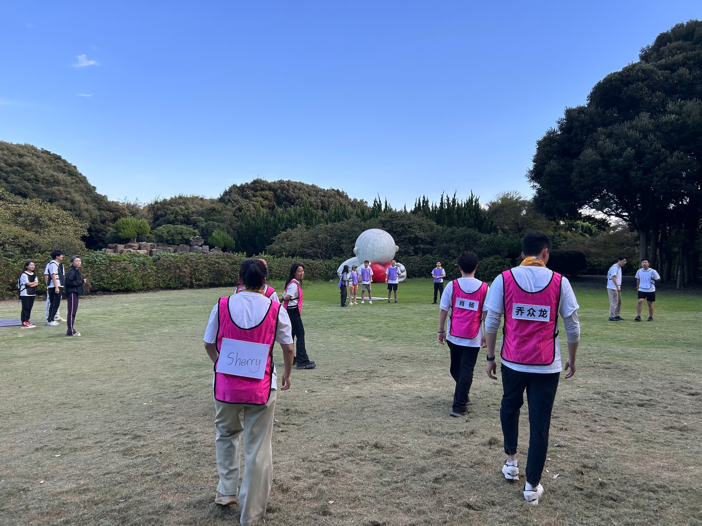
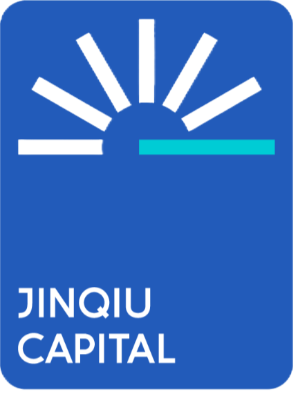
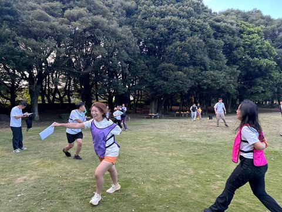

01 / 05DAY 01临时演示
假定为第一天 · 现场记录 01
户外挑战
刚刚开始。
这一张先作为第一天的到达画面。真实版本会替换成确认过的当天活动与照片。
17:35:30 · JEJU
锦秋基金JEJU · ARCHIVE PROTOTYPEJINQIU / JEJU ARCHIVE
向下滑，穿过一段被记住的旅程。
五日航线 · 滚动控制航线准备中
END OF DEMO / 05 FRAMES
这里把目前的五张户外活动照片，暂时分别放进“第一天”到“第五天”，只是为了测试向下滚动时的穿越感。
它们实际来自同一段连续记录，并不代表真实的五天行程。确认骨架后，再替换成真实日期、活动和更多照片。

评论区暂不放进这一版动效测试，先确认“Logo → 每天 → 穿越 → 到达”的节奏。
重新出发 ↑